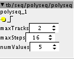
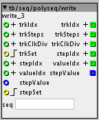
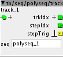
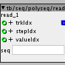
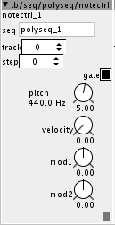
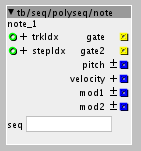
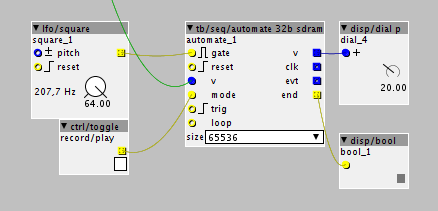

Take a look at the one I have and tell me what you think. I think it works pretty well 
TheTechnobear contributions
jaffasplaffa
#23
Sputnki
#24
I don't have my axoloti with me, so i can't test it, however i meant a reset inlet just like that, bravo!
I guess the sync implementation would be trickier, seeing all the effort johannes has put into bandlimiting the osc/saw sync object. I wonder if that could be ported from an object to another (i guess no, but who knows)
jaffasplaffa
#25
Yeah sync might be trickier. Anyway, I am pretty sure it works. I tested it next to another wt osc and it seems to do the trick
About the porting, I ave no idea. I am still very new at the coding. Just starting to get a hang of some of it.
thetechnobear
#26
tb/seq/polyseq
Description: a set of objects for a polyphonic, polymetric, polyrhythmic step sequencer.
this was created as a seed for the Fellowship of Axo challenge
Version: 1.0.12
polyseq/polyseq - main sequencer with clock input
here we set the maximum number of tracks we want, and the maximum steps each track can have (we can use less by setting the number of steps on the track , see polyseq/write), and the number of values store per step.
(all values are 32bit int, but how you decode/encode them is up to you  )
)
clock, its expected that you'll run the clock fast, as its going to be sub-divided by each track, according to the clock division. e.g you could run at 24ppqn , then put a clock division of 24 on a track , to get quarter notes. via polyseq/write

polyseq/write - allows track configuration (steps and clock division) and also to change step values
I know looks complicated, but its not
simple cases:
a) change track parameters (most likely you'll want this)
feed a value into trkIdx to select the track
feed trkSteps the new number of steps for the track, and trkClkDivs the number of clock divisions (of the main clock)
THEN set the values by sending a pulse into trkSet.
(trkSteps must be less than maxSteps on the main polyseq/polyseq object)
b) changing step values
feed a value into trkIdx/stepIdx/valueIdx to select the track, step and value you wish to change
feed into stepValue the new value THEN set the values by sending a pulse into stepSet.
(simpler is to use polyseq/notectrl, see below)
note: when you change trkIdx, stepIdx or valueIdx the current values are sent out of the outlets, useful if for developing 'control interfaces'.

polyseq/track - outputs the tracks current step and a trig each time it changes, use to drive polyseq/read and/or polyseq/note

polyseq/read - returns the value for a given step (fed from polyseq/track)
(simpler is to use polyseq/note, see below)

polyseq/notectrl - allows users to enter note date for a step, use polyseq/note for playback
Note: polyseq/polyseq must be set to have at least 5 values.

polyseq/note - returns note data for a given step (fed from polyseq/track), setup by polyseq/notectrl
Note: polyseq/polyseq must be set to have at least 5 values.

Fellowship of Axo - Seeds of inspiration
stepan.dvoracek
#27
Hi, I struggle with this object. I get the events echoed only if I trigger gate with LFO, but the record doesn´t work for me. Can you point me to what I´m doing wrong?

thetechnobear
#28
ive been meaning to 'tidy up' this object, its not as clear as it could be, and perhaps an easier interface to use.
basically, trig = clock, and gate = run
(so its trig that needs the lfo not gate)
have you checked the help page?
you need to be sending a clock into trig (I need to rename this to clk), gate is basically the 'run' signal, so you can just keep it 'high' if you want the automation to be recorded or play.
jaffasplaffa
#30
Sounds nice. I really like it, but having problems using cause patches with that one included often disconnects.
I am thinking it might be related tothat it show all data of the patch in the log? I remember seeing inthe midi feedback object that it should only be used for testing cause it cause disconnects,,, And this does the same, so might be related
jaffasplaffa
#32
Ahhokay maybe my version is an old one. I got it very long time ago and copied it to loca library. That might be the reason
chaocrator
#33
where can i find the help patch mentioned in polyseq description?
(„see help patch for details“)
mtyas
#34
you can find the help files in the help menu (top right of main window) then library, then community folder, then tb\seq\polyseq\polyseq.axh
or by inserting the tb/seq/polyseq/polyseq object into your patch and then clicking on the small down triangle on the top left of the object, then choosing "help". This tip works for quite a few objects
hyena
#35
hello @thetechnobear, i found a bug in your cycle ad envelope and corrected it.
the inlets for modulating attack and decay were unconnected and thus not working. here's my correction:
cyclingADmod.axo (1.5 KB)
Spart
#36
Hi @thetechnobear I´m using your polyseq modules for making a Hardware Sequencer inspired on Moog Subharmonicon. I would like to control pitch and velocity of Note Contro modulel.
How could I put an inlet to put an external control of pitch and velocity? I know how to do it when I can see inside the module, but I can´t in your modules.